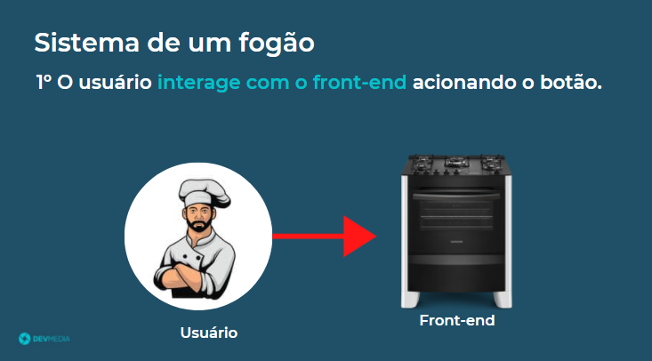
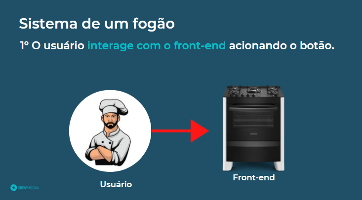
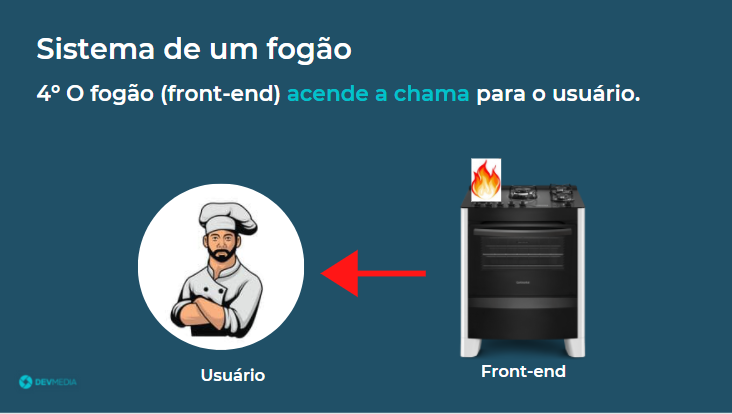
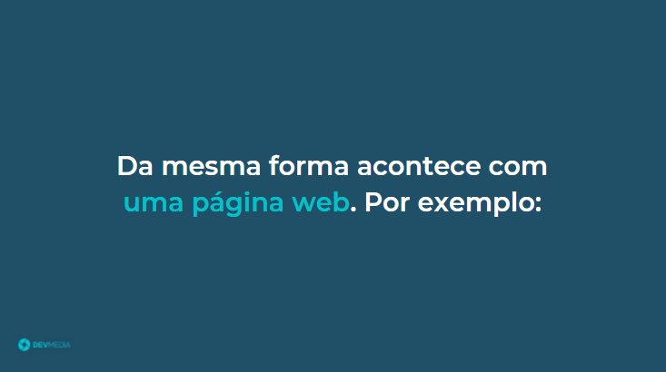
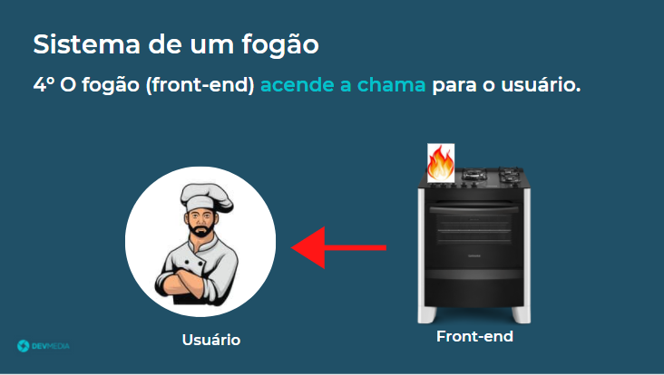
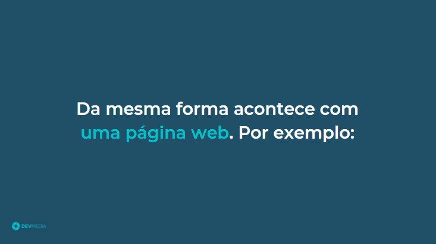
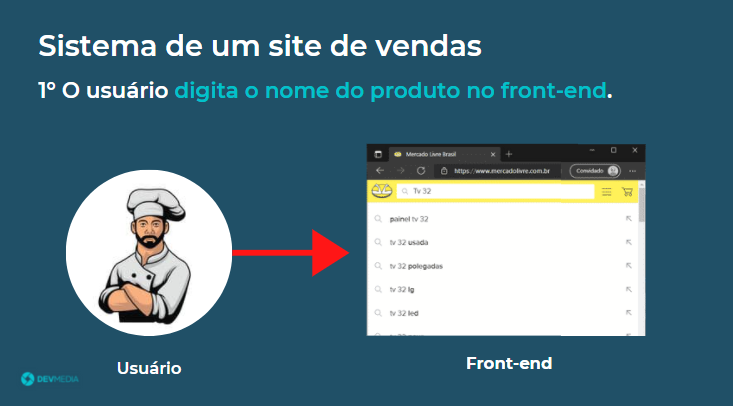
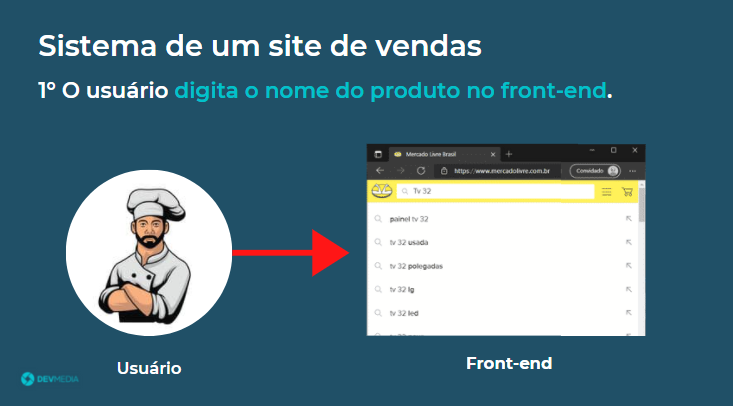

Além do front-end, alguns sites apresentam uma camada extra chamada de back-end como pode ser visto no flow abaixo:
Entenda no flow abaixo o que é back-end:


 

 




 



Veja na Figura 3 uma ilustração
do front-end e back-end.
Back-end é a camada responsável por manipular e armazenar as informações do site.
Nele o usuário não tem acesso,
quem consegue interagir com o back-end é a camada front-end